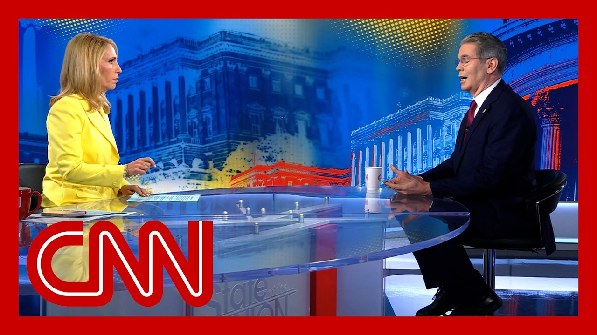

【CNN专访财政部长斯科特·贝森特：特朗普税改法案｜100多个国家同时面临关税截止｜即将到来的贸易谈判｜20250707】
Summary: President Trump's tax bill is now law, with debates on its benefits and Medicaid cuts, while tariff deadlines loom for over 100 countries. Treasury Secretary Scott Bessent discusses middle-class focus, work requirements, and upcoming trade negotiations.
摘要： 特朗普总统的税改法案已生效，围绕其福利和医疗补助削减的争论持续，同时100多个国家面临关税截止日期。财政部长斯科特·贝森特探讨了中产阶级焦点、工作要求及即将到来的贸易谈判。

⏱️ Estimated Reading Time: 15 min
📚 四级生词 📚 六级生词 📚 雅思生词 📚 托福生词 📚 专八生词 📚 SAT生词 📚 考研生词 📚 GRE生词 📚 高考生词 📚 其它生词生词
President Trump's big beautiful bill is now law.
特朗普总统的宏伟法案现已生效。
And as he hits the road to sell Americans on that new law, the president is also facing another deadline this week.
当总统开始向民众推销新法案时，本周他还面临另一截止日期。
More than 100 countries have only three more days to meet the deadline he set to make tariff deals.
100多个国家仅剩三天时间达成他设定的关税协议截止期限。
Here with me now to talk about all of that is Treasury Secretary Scott Besan.
现在与我一同讨论这些的是财政部长斯科特·贝森。
Thank you so much for coming in.
非常感谢您的到来。
I appreciate it.
我很感激。
Let's start with the new law and who it helps.
让我们从新法案及其受益者谈起。
The tax policy center says the majority of the tax benefits will go to Americans making $217,000 or more a year.
税收政策中心表示，大部分税收优惠将流向年收入21.7万美元及以上的美国人。
The Yale budget lab says the richest Americans will see their income rise by nearly 2%.
耶鲁预算实验室指出，最富裕的美国人群收入将增长近2%。
The lowest-dirty Americans will see their income drop by 3% when factoring in cuts to Medicaid and food stamps.
计入医疗补助和食品券削减后，最贫困人群收入将下降3%。
You argue that the benefits will really be aimed at the middle class.
您声称福利将真正惠及中产阶级。
How does that square?
这如何成立？
Let's have a look at the Yale budget lab because I was looking at their findings and this week I actually went on their website.
让我们看看耶鲁预算实验室——我查阅了他们的发现，本周还访问了其网站。
They're all ex-biden officials so I think we can discount everything they say.
他们都是前拜登政府官员，因此其言论不足为信。
I'd encourage all your viewers to look at the composition of both the board and the staff.
我建议观众们查看其董事会和员工的构成。
And it's just not right that what we have here is a middle class and working class bill that we are going to see wages accelerate and we are going to see just as we saw with President Trump's first tax bill, we are making permanent these tax cuts and what happened in 2017, 2018 was the highest wage earners went from paying 37% of all taxes to 45%.
说这是中产和工人阶级法案并不准确——我们将看到工资增长，正如特朗普首个税改法案那样。这些减税政策将永久化，2017-2018年最高收入者纳税比例已从37%升至45%。
So that's going to be permanent now.
如今这将永久化。
So permanently the highest 10% will pay a higher percent of the taxes.
最高收入的10%人群将永久承担更高比例税负。
I should say that taking the Yale budget lab aside, there are Republican senators who are worried about affordability and who this all is going to affect.
撇开耶鲁预算实验室，共和党参议员也担忧可负担性及受影响人群。
Look, I think affordability, safety and growth are the three things this bill is going to generate.
我认为该法案将带来可负担性、安全性和增长。
One of the tax cuts that are in here are for and the President talks about them a lot are on tips and over time.
其中一项减税针对小费和加班费——总统多次提及。
Those are temporary.
这些是临时性的。
Why not make those permanent?
为何不永久化？
They are only 2025 to 2028.
它们仅持续到2025-2028年。
This is a big part of President Trump's agenda.
这是特朗普总统议程的重要部分。
So we have what I call parallel prosperity here that Wall Street has done great.
我称之为"平行繁荣"——华尔街已表现优异。
Now it's time for working Americans to do great.
现在是劳动阶层获益的时候。
And this is President Trump's agenda.
这正是特朗普总统的议程。
So we've got it in for the duration of his term.
我们将在其任期内推进。
And we will see if the next administration wants to do that.
后续政府是否延续将见分晓。
And just talking about affordability, how is making cuts on Medicaid programs?
谈到可负担性，削减医疗补助计划如何实现？
How does that and how it affects the people who are at the lowest ranking when it comes to income?
这对最低收入人群有何影响？
How does that help with the affordability crisis in America?
这如何缓解美国的可负担性危机？
So first of all, affordability and saving Medicaid.
首先，区分可负担性与医疗补助储蓄。
Let's separate those.
需分开讨论。
And only in DC is a 20% hike over 10 years, a cut.
仅在华盛顿，十年增长20%会被称作削减。
So Medicaid funding will go up 20% over the next 10 years.
未来十年医疗补助资金将增长20%。
The people who Medicaid were designed for the pregnant women, the disabled and families with children under 14 will be refocused.
医疗补助初衷服务对象——孕妇、残疾人和14岁以下儿童家庭——将重新成为重点。
The able-bodied Americans are not vulnerable Americans.
健全美国人并非弱势群体。
So a work requirement or a community service requirement, that's very popular with the public and many state programs have that now.
工作要求或社区服务要求广受公众支持，多州已实施。
It might be popular, but it's not with the President's promise.
或许受欢迎，但这违背总统承诺。
The President promised that there would not be changes to Medicaid benefits.
总统承诺过不改变医疗补助福利。
And putting a work requirement is, by definition, it changed to benefits.
工作要求本质上改变了福利。
There are no change in benefits.
福利内容没有变化。
There is a change in requirements to get the benefits.
是获取福利的要求有变。
And what we were doing, we were bringing back manufacturing jobs.
我们正在重振制造业岗位。
We were bringing back working class jobs.
我们正恢复工人阶级就业。
By securing the border, we have seen, already seen, working class wages move up.
通过边境管控，我们已看到工人阶级薪资上涨。
So we are creating jobs.
我们正在创造就业。
People can get off Medicaid and get a job that has good healthcare benefits.
人们可退出医疗补助，获得含医保的工作。
In theory, that works, but I'm sure you've seen and heard a lot of the concern, including and especially from Republicans who are the most vocal in Congress about the fact that those work requirements are going to be very cumbersome to actually prove, and it will inevitably force the people who need that Medicaid coverage off the rolls.
理论上可行，但您定听到许多担忧——尤其来自国会中共和党人——他们指出证明工作要求的复杂性，最终将迫使需要医疗补助者退出。
Well, first of all, the Republicans are not the most vocal on this.
首先，共和党并非最积极发声者。
It is a group of Democrats who unfortunately seem to think that poor people are stupid.
是一群民主党人似乎认为穷人愚昧。
I don't think poor people are stupid.
我不认为穷人愚蠢。
I think they have agency, and I think to have them register twice a year for these benefits that is not a burden.
他们具备能动性，每年登记两次福利并非负担。
But these people who want to infantilize the poor and those who need these Medicaid benefits are alarmist.
那些将贫困人口婴儿化的人才是危言耸听者。
Yeah.
确实。
But my impression of the Republican Party is that historically, you've wanted to cut through the red tape and not create more red tape.
但共和党历来主张简化程序而非增设官僚障碍。
But I do want to move on because of...
不过我想继续...
No, no, no, but we've also wanted to put in work requirements, which somehow that was very popular under Bill Clinton, was popular under President Obama, and this Democratic Party blew out the deficit in 2020, and they never want to bring it back.
不，我们也推行过工作要求——这在克林顿和奥巴马时期颇受欢迎。当前民主党在2020年推高赤字后却不愿恢复。
But work requirements even pull well with the median Democratic voter, maybe not the fringe.
工作要求甚至受民主党中间选民支持，除极端派外。
Let's talk about tariffs.
谈谈关税吧。
A President Trump gave countries in 90-day pause on the sweeping tariffs he put in place back in April.
特朗普总统给予各国90天暂缓期，暂停四月实施的全面关税。
That pause ends in three days.
暂缓期三天后结束。
What happens on Wednesday?
周三会发生什么？
We'll see.
拭目以待。
I'm not going to give away the playbook because we're going to be very busy over the next 72 hours.
我不会透露计划——未来72小时我们将非常忙碌。
We are going to...
我们将...
President Trump's going to be sending letters to some of our trading partners, saying that if you don't move things along, then on August 1st, you will boomerang back to your April 2nd terrible level.
特朗普总统将致信贸易伙伴：若未取得进展，8月1日起将恢复4月2日的关税水平。
So I think we're going to see a lot of deals very quickly, and we're going to send out probably a hundred letters to small countries where we don't have very much trade, and most of those are already at the baseline 10%.
预计将快速达成多项协议，并向贸易量小的国家发送约百封信函——它们多数已适用10%基准税率。
But you said August 1st.
但您提到8月1日。
You mean what's going to happen in August?
这是指八月生效？
So the countries will get a letter saying that if we have not reached an agreement, then you will go back to the April 2nd level.
各国将收到信函：若未达成协议，将恢复4月2日税率。
Starting when?
何时开始？
On August 1st?
8月1日？
On August 1st.
8月1日。
Okay.
好的。
So there's basically a new deadline.
这相当于新截止日。
It's not a new deadline.
并非新截止日。
We are saying this is when it's happening.
我们只是明确执行时间。
If you want to speed things up, have that it.
想加速进程请自便。
If you want to go back to the old rate, that's your choice.
若想恢复旧税率，悉听尊便。
When you say that there's going to be a lot happening over the next few days, and you don't want to give me the playbook, is there a playbook?
您说未来几天将有重大进展却不愿透露计划——究竟是否存在计划？
Sure.
当然。
The playbook is to apply maximum pressure.
计划就是施加最大压力。
We saw that the EU was very slow in coming to the table three weeks ago on a Friday morning, President Trump threatened 50% tariffs, and within a few hours, five of the European national leaders at Calden and Ursula Vandrola, and the head of the EU was on the phone, and the EU is making very good progress.
三周前周五早晨，欧盟迟迟不愿谈判。特朗普总统威胁征收50%关税后数小时内，五位欧洲国家领导人及欧盟主席乌尔苏拉·冯德莱恩即来电沟通——欧盟现已取得良好进展。
They were off to a slow start.
他们起初行动迟缓。
The president said some countries could end up with tariffs as high as 70%, which countries he's talking about.
总统称某些国家可能面临70%关税——具体指哪些？
I think you'd go back and look at the April 2nd levels.
请回顾4月2日的税率清单。
But again, none of those are major trading partners.
重申：这些均非主要贸易伙伴。
They're 18 important trading relationships that account for 95% of our deficit, and those are the ones we're concentrating on.
18个重要贸易关系占我们赤字的95%——这些才是重点。
Are you close to any deals before Wednesday?
周三前能否达成协议？
I know you're talking now about August 1st, but where are you on the day?
您提到8月1日，但当前进展如何？
We are close to several deals.
接近达成多项协议。
As always, there's a lot of foot dragging on the other side, and so I would expect to see several big announcements over the next couple of days.
对方一贯拖延，但未来几天预计将有重大宣布。
Can you name names?
能透露具体国家吗？
I'm not going to name names, because I don't want to let them off the hook.
恕不点名——我不想让他们逃脱责任。
When you talk about these letters and you talk about the 90 deals in 90 days, or at least the president did back in April, so far that we've seen three, and they're not concrete deals the way that we're used to seeing trade deals.
您提到这些信函和"90天90协议"（总统四月提出），但目前仅见三项，且非传统意义上的具体贸易协议。
They're frameworks.
只是框架。
The president has a reputation, self-described dealmaker.
总统自诩"交易大师"。
Why haven't we seen the kind of deals that he promised in the last 90 days?
为何过去90天未见其承诺的协议？
Again, he didn't promise this.
他并未如此承诺。
And when we send out the 100 letters to these countries, that will set their terraform.
当我们向这些国家发送100封信函时，将设定其基本规则。
So we're going to have 100 done in the next few days.
未来几天将完成100份。
That's not a deal.
这不算协议。
That's a threat.
这是威胁。
No, that's the level.
不，这是标准。
That's the deal.
这就是协议。
If you want to trade with the United States, this is...
若想与美国贸易，就必须...
But that's not an negotiation.
但这不算谈判。
That's just a...
这只是...
Well, many of these countries never even contacted us.
许多国家甚至从未联系我们。
That's the thing about being the deficit country, Dan.
这就是逆差国的优势。
Is when you were the deficit country, you have the leverage.
作为逆差国，我们拥有杠杆。
These are surplus countries that have exported more to us than we export to them.
这些顺差国对我们的出口远超进口。
So we have the leverage in the situation.
因此我们掌握主动权。
You know, when I talked to small business owners, both doing interviews with them and just in and around in my life interacting with them, I have not met one who has not said, it's the uncertainty with the tariffs that is making it so hard for them to do business because they're kind of frozen in place.
我采访和接触的小企业主都表示——关税不确定性使他们举步维艰。
What do you say to those business owners?
您对此有何回应？
Well, I'd say two things is the other thing they would probably have been telling you is it was the uncertainty around taxes.
首先，他们可能也提过税收不确定性。
So with the one big beautiful bill, they now have great certainty on taxes.
而"宏伟法案"已解决税收确定性。
They've said tariffs.
他们提到关税。
No, no, but let me finish.
请让我说完。
When I'm out talking to businesses, they want trade and taxes.
企业界关注贸易和税收。
So we have certainty on taxes now.
税收现已明确。
All businesses know that they'll be getting 100% expensive for new plant and equipment.
所有企业都知道新厂房设备将享受100%费用抵扣。
On tariffs, again, it is the 18 important trading relationships and we're moving through those.
关税方面，我们正推进18个重要贸易关系。